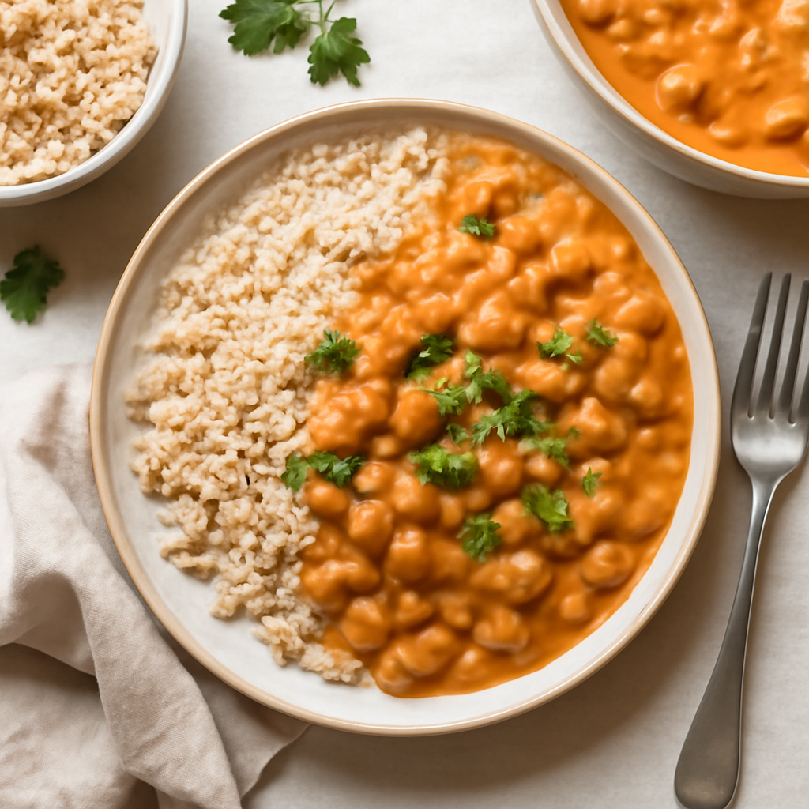

Tuesday — Pressure Cooker Chickpea Curry

Cook Time: 30 minutes
Method: Pressure Cooker
vegancurrychickpeas
Ingredients for 6
- 2 cups canned chickpeas (drained)
- 1 can (14 oz) coconut milk
- 1 onion (diced)
- 2 garlic cloves (minced)
- 1 tablespoon curry powder
- 1 teaspoon cumin
- 1 cup vegetable broth
- 3 cups brown rice (cooked)
- Salt to taste
Instructions
- Add onion and garlic to the pressure cooker and sauté for 2-3 minutes.
- Add chickpeas, coconut milk, curry powder, cumin, and broth.
- Seal and cook on high pressure for 10 minutes, then natural release.
- Serve over brown rice.
Toddler Notes
- Mash chickpeas lightly for better texture.
- Serve curry on rice, avoiding whole chickpeas.
← Back to weekly plan